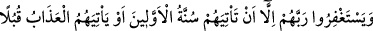
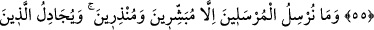
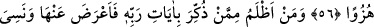
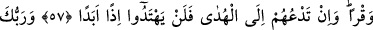
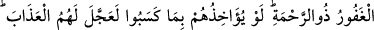
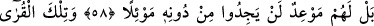
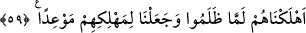

TARTIŞMAYA EN ÇOK
DÜŞKÜN VARLIK
54. Hakîkaten biz bu Kur’an’da insanlar için her türlü misali sayıp dökmüşüzdür.
Fakat tartışmaya en çok düşkün varlık insandır.
55. Kendilerine hidâyet geldiğinde insanları îman etmekten ve Rablerinden
mağfiret talep etmekten alıkoyan şey, sadece, öncekilerinin başına gelenlerin kendi
başlarına da gelmesini, yahut azâbın göz göre göre kendilerine gelmesini
beklemeleridir!
56. Biz rasulleri, sadece müjdeleyiciler ve uyarıcılar olarak göndeririz. Kâfir
olanlar ise, hakkı bâtıla dayanarak ortadan kaldırmak için bâtıl yolla mücâdele
verirler. Onlar âyetlerimizi ve uyarıldıkları şeyleri alaya almışlardır.
57. Kendisine Rabbinin âyetleri hatırlatılıp da ona sırt çevirenden, kendi elleriyle
yaptığını unutandan daha zalim kim vardır! Biz onların kalplerine, bunu
anlamalarına engel olan bir ağırlık, kulaklarına da sağırlık verdik. Sen onları
hidâyete çağırsan da artık ebediyen hidâyete eremeyeceklerdir.
58. Senin, bağışı bol olan Rabbin merhamet sâhibidir; şâyet yaptıkları yüzünden
onları (hemen) muaheze edecek olsaydı, onlara azâbı çarçabuk verirdi. Fakat
kendilerine tanınmış belli bir süre vardır ki, artık O’ndan kaçıp kurtulacakları bir
sığınak bulamayacaklardır.
59. İşte şu ülkeler; zulmettikleri zaman onları helâk ettik. Onları helâk etmek